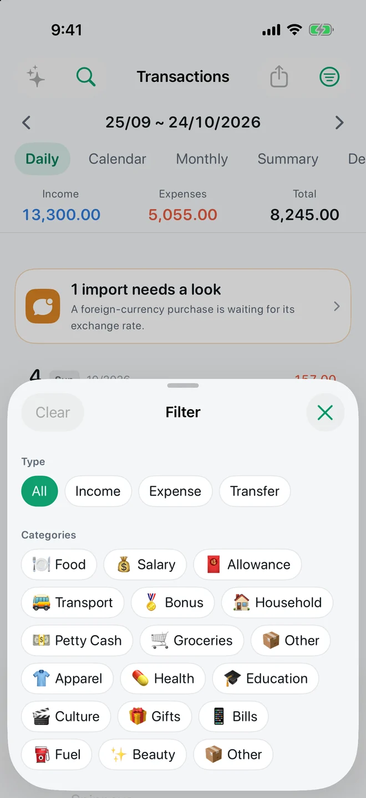

FEATURE · PRIVACY · FREE
A money app that never asks for your bank password.
TrackExpenses has no bank connection and no app account. Your ledger lives on your own devices, with optional sync through your own private iCloud, and App Lock protects it with a passcode and Face ID.


Real app screens with example records.
What stays where
- No bank login: entries come from you, your voice, alerts you paste, or bank texts and emails you choose to pass in through Shortcuts.
- No account: nothing to sign up for; no email required.
- On your devices: the ledger is stored on your iPhone or iPad. Optional iCloud sync uses the private part of your own iCloud to keep it the same on your iPhone, iPad and Mac.
- Messages aren't kept: an imported alert is read and discarded; only the transaction is saved.
- Voice stays local: speech is recognized on the device.
- The coach asks first: questions the phone can answer, charts and logging stay on the device. An open question goes to an AI only after you agree, and never with your notes, receipts, account names or numbers, or balances. What leaves your phone.
App Lock
More → App Lock sets a passcode, with Face ID to unlock. The passcode protects this device only and never leaves it.
When Pro or a trial ends
Nothing you saved is locked. Your entries, accounts and repeating bills stay as they are and keep working, even past the free limits of 3 accounts and 2 repeating rules. A short note says what changed: a Pro theme goes back to the standard one and a Pro app icon to the main icon, and both come back by themselves if you get Pro again.
Your data, portable
Your records stay in the app, free, and are never locked. Pro adds Export & Share (a CSV of any span and the full JSON backup), restoring a backup and CSV import, so you can move in or out without losing history. More → Backup & Export → Erase all data deletes everything from this device and every device that syncs with your iCloud. The privacy policy explains each kind of data in detail.
Questions
Does TrackExpenses connect to my bank?
No. There is no bank connection and no bank login. Transactions come from manual entry, voice, alerts you paste, or bank messages you choose to pass in.
Do I need an account?
No. There is no app account. Sync, if you turn it on, uses your own private iCloud.
Can I lock the app?
Yes. App Lock sets a passcode with Face ID unlock, and it is free.
What happens to my data if Pro ends?
Nothing you saved is locked. Entries, accounts and repeating bills stay and keep working. A Pro theme and app icon go back to the standard ones and return if you get Pro again.
Your money, easier to follow.
Expense Tracker: SMS & Voice for iPhone, iPad and Mac.
5.0 on the App Store · 8 ratings across 5 countries · Checked 2026-11-20
App facts and free / Pro limits
Expense Tracker: SMS & Voice (TrackExpenses) is made by Mohamed Elatabany for iPhone and iPad with iOS/iPadOS 17 or later, and runs on Mac computers with Apple silicon. The app is in English, Arabic, German, Spanish and Brazilian Portuguese, with a full right-to-left Arabic interface. No app account or bank login is required. Optional Shortcuts automations import supported bank SMS, bank email alerts (through Apple’s Mail app) and Wallet purchases, and a bank SMS or email can be pasted; the app does not read your Messages inbox or your email. Voice entry creates on-device drafts on compatible devices and languages. The free ledger includes unlimited manual transactions, budgets, current-period budget moves and Cover with the total unchanged, days left and spent/left amounts, budget alerts (at 80% when ahead of pace, and when over), bill reminders the morning before a repeating expense is due, historical stats, search with Spent and Income totals across every period, private iCloud sync across iPhone, iPad and Mac, 3 accounts, 2 recurring rules, 10 saved voice entries per calendar month per device and 10 successful automatic bank SMS or email imports per calendar month per device. Touching and holding the app icon offers Say an expense, New expense, Paste bank message and Ask your coach. The money coach reads the last budget month and suggests one limit. Today’s spending, a category, account balances, any named month, charts, files and typed logging are worked out on the device without using a question; open questions go to Anthropic’s Claude through the developer’s relay only after the user agrees, with the conversation so far, a summary of this month and last month and, when the model asks, totals for up to 13 months or up to 20 purchases with their date, shop, category and amount; never notes, receipts, account names or numbers, or balances (10 a month free per device). SMS alerts past the free allowance are kept but locked outside totals; upgrading to Pro adds them all, otherwise the next calendar month’s allowance releases as many as it covers. Nothing is dropped and saved history is never locked; when Pro or a trial ends, entries, accounts and repeating bills keep working. Pro adds unlimited voice entry, SMS and email imports, accounts and recurring rules, money coach challenges and more coach questions, a salary plan, forecasts, overall and per-budget daily guidance with repeating bills accounted for first, a daily budget for chosen categories optionally up to a date, what-if planning, Export & Share (CSV of any range and the full JSON backup; every export is Pro since 1.15.0), CSV import, backup restore, themes and alternate icons. Monthly and annual subscriptions and a one-time lifetime purchase are available. Spending calculations depend on your records and are not financial advice.